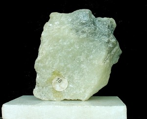
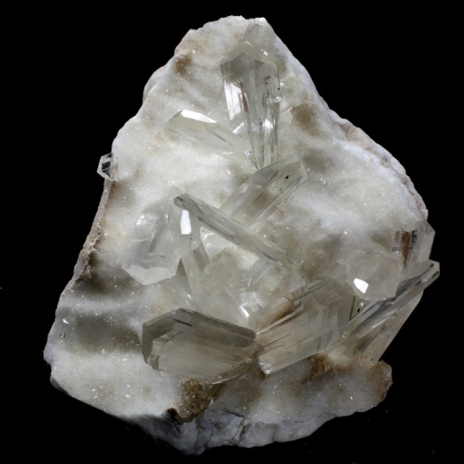
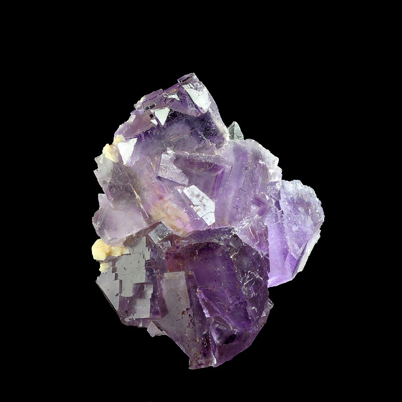
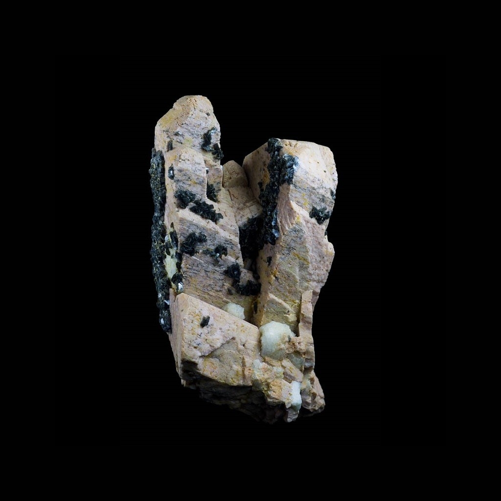
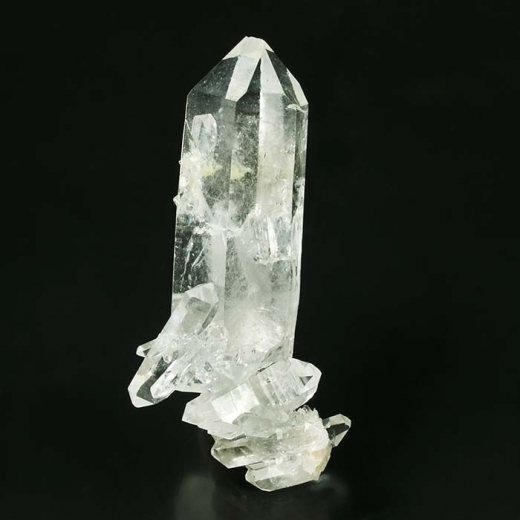
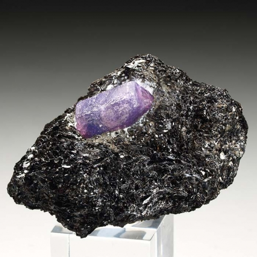
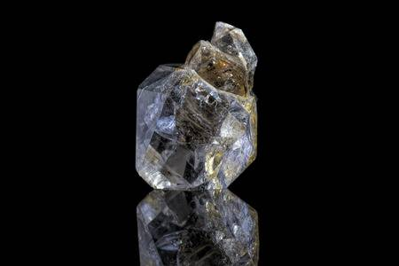

Mohs
| DUREZA |
IMAGEN |
MINERAL |
SE RAYA CON |
COMPOSICION QUIMICA |
|
|  |
Talco |
Se puede rayar fácilmente con una uña |
CaSO4·2H2O |
|  |
Yeso |
Se puede rayar fácilmente con una uña con mas dificultad |
CaSO4·2H2O |
 |
Calcita |
Se puede rayar con una moneda de cobre |
CaCO3 |
|  |
Fluorita |
Se puede rayar con un cuchillo de acero |
CaF2 |
 |
Apatito |
Se puede rayar difícilmente con un cuchill |
Ca5(PO4)3(OH-,Cl-,F-)l |
|  |
Ortosa |
Se puede rayar con una lija para el acero |
KAlSi3O8 |
|  |
Cuarzo |
Raya el vidrio |
SiO2 |
 |
Topacio |
Rayado por herramientas de carburo de wolframio |
Al2SiO4(OH-,F-)2 |
|  |
Corindón |
Rayado por herramientas de carburo de silicio |
Al2O |
|  |
Diamante |
Rayado por herramientas de carburo de silicio |
C |